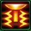

- Stats
- Abilities/Upgrades
- Strategy
- Lore
- Related
Armor: 3
Mineral Repair Cost:
 100
100Gas Repair Cost:
 75
75Repair Time:
 90
90 50/200 | 75/200 with Behemoth Reactor 0.5625 per second
50/200 | 75/200 with Behemoth Reactor 0.5625 per secondName: ATS Laser Batteries
Damage: 8
Attacks: 1
Cooldown: 0.225
Targets: Ground only
Attack Range: 6
-Air Attack-
Name: ATA Laser Batteries
Damage: 6
Attacks: 1
Cooldown: 0.225
Targets: Air only
Attack Range: 6
Requirements: Levels 2-3 requires Armory
| Level |  Level 1 Level 1 |  Level 2 Level 2 |  Level 3 Level 3 |
| Minerals | 100 | 175 | 250 |
| Vespene Gas | 100 | 175 | 250 |
| Time | 160 | 190 | 220 |
| Damage Bonus | +1 | +1 | +2 | +2 | +3 | +3 |
| Total Damage | 9 | 7 | 10 | 8 | 11 | 9 |
Acceleration: 1
Collision Radius: 1.25
400Vespene Cost:
300Supply:
 6
6Produced From: Starport with Tech Lab Build Time:
90Requirements: Fusion Core
Requirements: Levels 2-3 requires Armory
| Level |  Level 1 Level 1 |  Level 2 Level 2 |  Level 3 Level 3 |
| Minerals | 150 | 225 | 300 |
| Vespene Gas | 150 | 225 | 300 |
| Time | 160 | 190 | 220 |
| Armor Bonus | +1 | +2 | +3 |
| Total Armor | 4 | 5 | 6 |
Unit Type: Armored, Mechanical, Massive, Air
| Icon | Minerals | Vespene Gas | Research Time | Researched At |
|  | 150 | 150 | 60 | Fusion Core |
Range: 10
Duration:
3 125Damage: 300
Information: Once Yamato Cannon has been researched, it allows the Battlecruiser to use its ultimate weapon.
The Yamato Cannon costs 125 energy to cast, and has a range of 10. Once a target has been selected, it takes the Battlecruiser 3 seconds to charge up the cannon, and then shoot it.
Once the Battlecruiser has a target, it can still hit it with the Yamato Cannon up to a range of 20.
The Battlecruiser has a graphic change once Yamato Cannon is researched. It will start glowing in the center where it charges up the cannon with orange/yellow colors.
| Icon | Minerals | Vespene Gas | Research Time | Researched At |
| 150 | 150 | 80 | Fusion Core |
Information: Once Behemoth Reactor is researched, Battlecruiser will start with 75 energy instead of 50.
If you have any suggestions for more strategies, go ahead and post on the forums 'here'!
+1 Weapons vs Zerglings
When Zealots have a +1 weapon advantage versus Zerglings, they will kill Zerglings in two attacks instead of three. This makes Zealots very effecient against Zerglings until the zerg catches up in armor upgrades.
Because of this, there are a handful of timing attack that take advantage of the effecient +1 weapon zealots, forcing the zerg to make spines, roaches, or some other unit than zerglings unless the zerg wants to trade inefficiently.
+1 Weapons vs Zerglings
Sum text about how gosu this is
+1 Weapons vs Zerglings
Sum text about how gosu this is
- Overview
- Variations
The battlecruiser is a type of terran capital ship employed in the Koprulu Sector. Battlecruisers were employed during the Guild Wars when space engagements were fought by capital ships and medium-sized gunships.
The development of anti-capital ship starfighters, such as Wraiths, did not spell the end of battlecruisers. The large warships adapted to carry strike craft which augmented and complemented the combat value of both. Battlecruisers continue to be an integral part of terran space forces as general purpose warships and command ships during extended campaigns.
Battlecruisers stem as far back as the early days of the Terran Confederacy in the 24th century and continue to be used in the 26th. While there are many classes of battlecruisers, all are armed with lasers and protected by neosteel armor. Gravity accelerators are also found on all battlecruisers.
Leviathan-class
The Leviathan-class battlecruiser is an uncommon battlecruiser class and although still operating at the dawn of the 26th century, had largely been supplanted by the Behemoth-class variant. The Leviathan-class is capable of traveling through warp space and features ports for transport craft, smaller craft linking into the ship via hydraulics. These ports are located perilously close to the bridge however, making a Leviathan vulnerable to any enemy boarding action.
Behemoth-class
The Behemoth-class battlecruiser was the most common battlecruiser class and represented the "standard" battlecruiser variant during the Great War. The Behemoth variant is greatly advanced from its Leviathan-class predecessor, featuring the ability to operate within planetary atmospheres and even land on planets. It also features a total of four docking bays (as opposed to hydraulic entry points) which are equipped with force fields, allowing easy deployment of fighters without fear of decompression and greater resilience to enemy boarding actions. Like the Leviathan, it is capable of traveling through warp space, even capable of making jumps within a planet's atmosphere.
Behemoth-class armor consists of the standard neosteel, along with energy shields, while armament consists of multiple burst laser batteries (at least 8 around the ship's 'hammerhead') and a complement of nuclear warheads. Despite the heavy arsenal, Behemoth armament is slightly constricted in that its laser batteries cannot fire at targets to the side and are vulnerable to interceptors and its warheads are reserved for orbital bombardment rather than space combat.
A saving grace for the Behemoth-class exists in the form of the Yamato cannon. One such use of these weapons is that of carrying out a scorched earth policy. However, the cannon's primary weakness is its huge energy requirements and while the installation of a colossus reactor allows for increased energy storage, it is not a long term solution. The Terran Dominion's Behemoths required access to physics labs to "power up their weapon systems". Should a fleet commander lose access to these accelerators, an entire Behemoth-class fleet can be crippled.
Fighters are an integral component to battlecruiser deployment and the Behemoth-class conforms to this, capable of deploying Wraiths and scoutships to engage the enemy. It is also akin to a terran carrier, capable of housing hundreds of soldiers and hardware and maintaining dropships and shuttles for rapid deployment. Searchlights are also featured.
Despite its shortcomings, the Behemoth-class has proven to be an enduring design, keeping up to date with periodic upgrades while its hammerhead design had provided the basis for future classes. Although more advanced classes of battlecruiser have been developed, the Behemoth-class continue to remain in service.
Hercules-class
The Hercules-class battlecruiser came into service after the Brood War. It is largely based on the Behemoth-class, albeit equipped with additional laser batteries for a greater volume of fire. Plasma torpedoes are an optional armament, capable of saturating an area with a lethal deluge of fire, ideal for breaking up oncoming attack waves or ravaging a defensive position. As with the Yamato cannon, a sufficient reserve of energy was needed to unleash a plasma torpedo bombardment.
Minotaur-class
The Minotaur-class battlecruiser was in service to the Terran Dominion by 2502. This class (or at least the Bucephalus, a flagship) has dimensions of about 560 meters length by 82.4 meters wide, and a crew numbering approximately 8000 people. Minotaurs are largely based on the Behemoth-class, and have additional laser batteries for a greater volume of fire. In 2503, these warships were suddenly recalled to Korhal IV. They were ordered to abandon their current assignments, disembark passengers and cargo on nearby habitable worlds, and proceed immediately to the Dominion capital to be refitted for interatmospheric combat.
The Minotaur-class may be upgraded by a variety of tactical systems. Equipped with a Type-V Yamato cannon and energy shields, Minotaurs can also be equipped with missile pods for use against aerial targets and a defensive matrix.
The interior of Minotaur battlecruisers are known to feature personal quarters, a brig, a mess hall and a bridge.
Source Information
Text information from the Starcraft Wiki.
Photo 1 created by Saejin Oh. Copyright: UDON Entertainment.
Photo 2 created by Samwise Didier. Copyright: Blizzard Entertainment.
| Terran |
| Units |
| Command Center | SCV | Mule |
| Barracks | Marine | Marauder | Ghost | Reaper |
| Factory | Hellion | Siege Tank | Thor |
| Starport | Medivac | Viking | Banshee | Raven | Battlecruiser |
| Structures |
| Basic Buildings | Command Center | Orbital Command | Supply Depot | Refinery |
| Defensive Buildings | Planetary Fortress | Bunker | Missile Turret | Sensor Tower |
| Infantry Buildings | Barracks | Engineering Bay | Ghost Academy |
| Mechanical Buildings | Factory | Starport | Armory | Fusion Core |
| Add-ons/Spawned | Auto-Turret | Point Defense Drone | Tech Lab | Reactor |